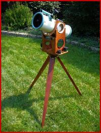
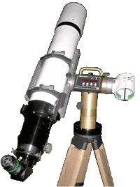
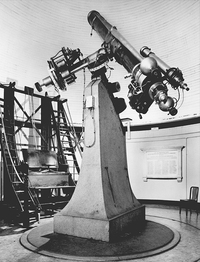

Introduction
This is a description of the TeenAstro software. It consists of 2 main parts, the Main Unit and the SHC (Smart Hand Controller).
Main Unit
The current design (2022) Main Unit runs on a Teensy 3.2 board. This is based on an ARM Cortex M4 processor, with peripherals (UART, timer, SPI, etc.). The stepper controllers are TMC2130 or TMC2160 from Trinamic in STEP/DIR mode.
The software is built with the Arduino framework (setup / loop) and consists of 3 main parts: the Main Loop, the Timer Loop and the Motor Interrupts. Without an operating system, it relies on global variables. To prevent concurrent variable accesses between the 3 contexts, it disables interrupts (cli / sei).
Main Loop
The Main loop runs every 10mS (sidereal). It polls for commands from both UARTs (SHC and USB), which handle identical commands based on the LX200 standard (Goto, track, guide etc) with proprietary extensions. It computes the positions and speeds of both axes, then checks for safety limits.
Positioning Mode (Goto)
Much of the code is common between Eq and Altaz mounts.
The simplified call sequence for a Goto RA/Dec command is as follows:
GotoEqu(HA, Dec) // LX200 command
EquToHor(HA, Dec) // computes target Az/Alt
goToHor(Az, Alt) // can also be called directly by LX200 command
toInstrumentalDeg(Az, Alt) // matrix operation that computes axes positions as floating-point degrees
predictTarget() // converts degrees to steps (long integers), taking into account the gear ratio
Angle2InsrtAngle // corrects positions according to pier side if needed
Goto(Axis1, Axis2) // check for errors, then sets targets for both axes
For retrieving current RA/Dec:
getEqu() // LX200 command :GR#, :GD#
getHorApp() // retrieves axis positions in steps and converts to degrees
toReferenceDeg() // matrix operation - converts axis degrees to sky Az/Alt
HorTopoToEqu() // converts Az/Alt to HA/Dec
Mapping sky coordinates to axis angles
The difference between Eq and AltAz mounts is handled inside the alignment matrix operations (toInstrumentalDeg / toReferenceDeg) based on Toshimi Taki's 2004 paper. At initialization, the alignment matrix is initialized as follows:
- for AltAz mounts, Axis1 is Azimuth reversed by 180º, Axis2 is Altitude, so that in the Home position the optical tube is horizontal, pointing South.
- for Eq mounts, it converts Axis1/Axis2 to Altitude and Azimuth, so that in the Home position the optical tube points to the celestial pole.
The idea is to perform all Goto with the same (AltAz) code.
This simplifies somewhat the design, but has several disadvantages:
- It causes problems near the poles, especially for polar alignment software: If we rotate the RA axis when pointing at the pole, the new AltAz position will be identical, since the tube still points at the pole, therefore the reported RA does not change, even though the RA axis has rotated.
- It hides the amount of conversions going on behind the scenes (see tracking section below)
Mapping axis angles to steps
This mapping is not one-to-one: The same position (in steps) may represent 2 different axis angles, according to the hemisphere. This also applies to the direction of tracking.
The motor reverse bit is handled at the very lowest level so that the whole software uses the same coordinates for direct and reverse directions.
Slewing Mode
Slewing or centering is triggered by pressing direction keys. It moves the mount at predefined speeds in any direction, without a target. This is the call sequence:
MoveAxis1/2 // LX200 command
MoveAxis1/2atRate (rate) // directy sets the motor timers
Tracking
Tracking does not use a fixed velocity for the RA axis, but repeated positioning mode on a moving pseudo-target. For an Eq mount, it goes like this:
computeTrackingRate // :Te# LX200 command. This enters the tracking mode called by the main loop:
do_compensation_calc() // Computes positions behind and ahead of the current position:
for each position
getEqu()
getHorApp() // retrieves RA/Dec axis positions in steps and converts to degrees
toReferenceDeg() // converts axis degrees to sky Az/Alt - matrix operation
horAppToEqu() // convert Az/Alt to RA/Dec - trig operation
equToHor() // convert RA/Dec to Az/Alt - trig operation
toInstrumentalDeg() // convert Az/Alt to RA/Dec axis degrees - matrix operation
instrtoStep() // axis degrees to steps
compute difference between the 2 axis positions, derive a speed then set the motor timers
Guiding
Guiding for astrophoto is performed either by signals on the ST4 connector emulating button presses, or by software commands. It increases or decreases the tracking speed on both axes.
The code is somewhat confusing because the term is used both for centering (SHC button presses) and for automatic guiding via software (PHD2 etc.)
enableST4GuideRate() // :Mgdnnnn# Pulse guide command
PerformPulseGuiding()
apply_GuidingA1() // modify the tracking pseudo-target
Timer Loop
The timer loop is triggered by a hardware timer that runs every 10mS (sidereal). From the current mode (Goto, track, guide etc.) it computes and programs the periods (rates) for both motor interrupts.
Motor Interrupts
There is one motor interrupt handler for each axis motor. Each one runs at a period determined by the axis speed and controls the STEP and DIR inputs of the TMC motor controller.
Smart Hand Controller
The SHC handles all user interface, as well as the databases for deep-sky objects, and the solar system computations. It is currently implemented on a Wemos processor that includes a Wifi interface. The peripherals are 7 buttons, a screen controlled by I2C, and a UART connected to the Main Unit. All commands and response follow the LX200 standard, with proprietary additions.
Primer on Mount Design
To point any direction in the sky, a telescope mount requires (at least) 2 orthogonal axes. In practice these two types exist:
- Alt-Az: Primary axis is vertical, secondary axis is horizontal.
- Equatorial: Primary axis points to celestial pole, secondary axis sweeps along a meridian.
Within these two main types, there are several design options:
- Fork: Optical tube is in the same plane as the primary axis.
- Offset: Optical tube is offset to the side of the primary axis. Usually requires a counterweight.
Therefore TeenAstro can be configured for any of these 4 types of mounts:
| Fork | Offset | |
|---|---|---|
| Alt-Az |  Alt-Az Fork |
 Alt-Az T-Mount |
| Equatorial |  Equatorial Fork |
 German Equatorial (GEM) |
Note that some systems do not fit in any of these categories. For example a Dobson telescope on an equatorial table actually has 3 axes: The primary is a kind of horseshoe (equatorial fork), on which an Alt-Az fork is sitting, but not horizontal. But it works!
Also note these interesting cases:
- at the North or South pole, an Alt-Az mount is also an equatorial
- at the equator, the primary axis of an equatorial mount is horizontal
Advantages of each type
Equatorial vs Alt-Az
Equatorial mounts follow the sky with only one motor on the right ascension (hour) primary axis. The object always stays in the same orientation, there is no field rotation. In contrast, Alt-Az mounts need two motors to track, and the field rotates during tracking, requiring a derotator to make images.
Alt-Az mounts are mechanically simpler and lighter. The last large equatorial mount was the 200-inch (5.1m) Hale at Mount Palomar (1949). Modern large telescopes are all Alt-Az.
Fork vs. Offset tube
Equatorial forks are generally bulky and reserved for large instruments. Alt-Az forks are common for amateur telescopes (especially for Schmidt-Cassegrain with short fat tubes). Most amateur telescopes intended for astrophoto are GEM mounts.
What it means for the mount firmware
The main task of a modern GOTO mount firmware is the computation of axis positions from the object's sky coordinates. For Alt-Az, the axis positions are the required altitude and azimuth. For Equatorial, the axis positions are the Hour Angle (Local sidereal time - Right Ascension of object) and the object's declination (with a positive or negative sign, depending on the RA axis position)
In both cases the computation is the same for fork or offset mounts, but the limits are different. For example, a GEM (German Equatorial) cannot track continuously across the southern sky. It needs to perform a meridian flip. Equatorial Fork mounts usually cannot track below the pole.